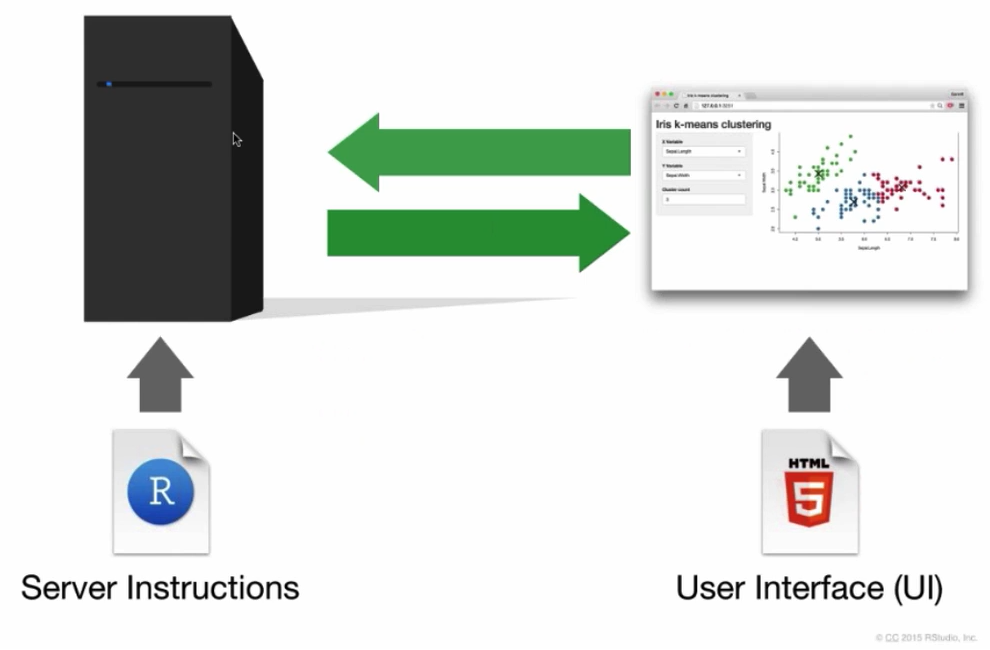

Build a Degree Day Decision Support Tool in R
Part 3. Shiny Apps

May
24,
2024
https://ucanr-igis.github.io/degday-shiny-s24/

May
24,
2024
https://ucanr-igis.github.io/degday-shiny-s24/


degday 


Working with dates in R
lubridate converting text to date-time objects, creating date-time objects from scratch time zones extracting date parts
Redo the graphic API request - server - response - table
Reading the docs
Prepare the request Base URL URL path Query Parameters Headers Body
sac_midcentury_req <- request(“https://api.cal-adapt.org/api/series”) |> req_user_agent(“oski@berkeley.edu”) |> req_url_path_append(“tasmax_year_MIROC5_rcp45/events”) |> req_url_query(g = “POINT (-121.4687 38.5938)”, start = “2040-01-01”, end = “2070-12-31”)
sac_midcentury_resp <- sac_midcentury_req |> req_perform()
sac_midcentury_resp |> resp_status_desc()
sac_midcentury_lst <- sac_midcentury_resp |> resp_body_json()
View(sac_midcentury_lst)
Protecting your API token
API Etiquette
Exercise: Synoptic Data
if there’s time
Show a graph of degree days varieties over time: single-sine, double-sine (put this in part I)
No API key is required:
R package:
Downscaled modeled climate data for western USA (1950 - 2099)
Gridded observed data: Livneh and gridMet
https://ucanr-igis.github.io/caladaptr/
First, make sure the date column is actually contains Date objects
(or POSIXct for date-time values), as opposed to text:
espartoa_tbl <- system.file("extdata/espartoa-weather-2020.csv", package = "degday") |>
read.csv() |>
mutate(date = as.Date(date))
espartoa_tbl |> head()## station date tmin tmax
## 1 Esparto.A 2020-01-01 38 55
## 2 Esparto.A 2020-01-02 36 67
## 3 Esparto.A 2020-01-03 33 59
## 4 Esparto.A 2020-01-04 37 59
## 5 Esparto.A 2020-01-05 38 63
## 6 Esparto.A 2020-01-06 36 58## [1] "Date"
Filtering a data frame based on the date can be with
dplyr::filter(). Just make sure the comparison values are
also dates.
For example, we can extract the values between St Patrick’s Day and Tax Day (April 15) in 2020:
## station date tmin tmax
## 1 Esparto.A 2020-03-17 41 55
## 2 Esparto.A 2020-03-18 43 53
## 3 Esparto.A 2020-03-19 36 61
## 4 Esparto.A 2020-03-20 35 64
## 5 Esparto.A 2020-03-21 39 66
## 6 Esparto.A 2020-03-22 40 69
## 7 Esparto.A 2020-03-23 45 65
## 8 Esparto.A 2020-03-24 40 58
## 9 Esparto.A 2020-03-25 36 57
## 10 Esparto.A 2020-03-26 34 61
## 11 Esparto.A 2020-03-27 35 63
## 12 Esparto.A 2020-03-28 46 58
## 13 Esparto.A 2020-03-29 46 62
## 14 Esparto.A 2020-03-30 45 67
## 15 Esparto.A 2020-03-31 52 72
## 16 Esparto.A 2020-04-01 46 66
## 17 Esparto.A 2020-04-02 46 69
## 18 Esparto.A 2020-04-03 40 67
## 19 Esparto.A 2020-04-04 42 57
## 20 Esparto.A 2020-04-05 45 56
## 21 Esparto.A 2020-04-06 40 59
## 22 Esparto.A 2020-04-07 42 66
## 23 Esparto.A 2020-04-08 44 64
## 24 Esparto.A 2020-04-09 49 64
## 25 Esparto.A 2020-04-10 51 73
## 26 Esparto.A 2020-04-11 47 72
## 27 Esparto.A 2020-04-12 47 75
## 28 Esparto.A 2020-04-13 48 77
## 29 Esparto.A 2020-04-14 51 80
## 30 Esparto.A 2020-04-15 43 81
Extract the in June, July, and August:
## station date tmin tmax
## 1 Esparto.A 2020-06-01 60 86
## 2 Esparto.A 2020-06-02 60 95
## 3 Esparto.A 2020-06-03 63 100
## 4 Esparto.A 2020-06-04 60 98
## 5 Esparto.A 2020-06-05 58 82
## 6 Esparto.A 2020-06-06 58 78
## 7 Esparto.A 2020-06-07 57 88
## 8 Esparto.A 2020-06-08 58 83
## 9 Esparto.A 2020-06-09 55 90
## 10 Esparto.A 2020-06-10 63 96
## 11 Esparto.A 2020-06-11 59 93
## 12 Esparto.A 2020-06-12 58 76
## 13 Esparto.A 2020-06-13 55 77
## 14 Esparto.A 2020-06-14 59 84
## 15 Esparto.A 2020-06-15 65 85
## 16 Esparto.A 2020-06-16 60 81
## 17 Esparto.A 2020-06-17 64 87
## 18 Esparto.A 2020-06-18 59 94
## 19 Esparto.A 2020-06-19 58 96
## 20 Esparto.A 2020-06-20 56 91
## 21 Esparto.A 2020-06-21 59 93
## 22 Esparto.A 2020-06-22 59 99
## 23 Esparto.A 2020-06-23 64 98
## 24 Esparto.A 2020-06-24 62 99
## 25 Esparto.A 2020-06-25 60 95
## 26 Esparto.A 2020-06-26 59 95
## 27 Esparto.A 2020-06-27 60 95
## 28 Esparto.A 2020-06-28 59 87
## 29 Esparto.A 2020-06-29 65 88
## 30 Esparto.A 2020-06-30 60 91
## 31 Esparto.A 2020-07-01 55 92
## 32 Esparto.A 2020-07-02 55 88
## 33 Esparto.A 2020-07-03 62 96
## 34 Esparto.A 2020-07-04 53 93
## 35 Esparto.A 2020-07-05 58 95
## 36 Esparto.A 2020-07-06 56 90
## 37 Esparto.A 2020-07-07 53 89
## 38 Esparto.A 2020-07-08 65 94
## 39 Esparto.A 2020-07-09 61 98
## 40 Esparto.A 2020-07-10 60 98
## 41 Esparto.A 2020-07-11 59 103
## 42 Esparto.A 2020-07-12 59 101
## 43 Esparto.A 2020-07-13 61 92
## 44 Esparto.A 2020-07-14 58 92
## 45 Esparto.A 2020-07-15 58 96
## 46 Esparto.A 2020-07-16 62 94
## 47 Esparto.A 2020-07-17 61 93
## 48 Esparto.A 2020-07-18 60 96
## 49 Esparto.A 2020-07-19 61 97
## 50 Esparto.A 2020-07-20 60 96
## 51 Esparto.A 2020-07-21 59 93
## 52 Esparto.A 2020-07-22 60 96
## 53 Esparto.A 2020-07-23 56 94
## 54 Esparto.A 2020-07-24 58 94
## 55 Esparto.A 2020-07-25 55 95
## 56 Esparto.A 2020-07-26 60 100
## 57 Esparto.A 2020-07-27 61 101
## 58 Esparto.A 2020-07-28 59 100
## 59 Esparto.A 2020-07-29 60 96
## 60 Esparto.A 2020-07-30 60 96
## 61 Esparto.A 2020-07-31 52 97
## 62 Esparto.A 2020-08-01 53 94
## 63 Esparto.A 2020-08-02 58 98
## 64 Esparto.A 2020-08-03 60 99
## 65 Esparto.A 2020-08-04 58 95
## 66 Esparto.A 2020-08-05 59 95
## 67 Esparto.A 2020-08-06 56 90
## 68 Esparto.A 2020-08-07 61 96
## 69 Esparto.A 2020-08-08 62 95
## 70 Esparto.A 2020-08-09 62 98
## 71 Esparto.A 2020-08-10 64 99
## 72 Esparto.A 2020-08-11 61 93
## 73 Esparto.A 2020-08-12 57 97
## 74 Esparto.A 2020-08-13 60 97
## 75 Esparto.A 2020-08-14 71 103
## 76 Esparto.A 2020-08-15 68 107
## 77 Esparto.A 2020-08-16 60 96
## 78 Esparto.A 2020-08-17 59 95
## 79 Esparto.A 2020-08-18 71 102
## 80 Esparto.A 2020-08-19 71 97
## 81 Esparto.A 2020-08-20 62 85
## 82 Esparto.A 2020-08-21 59 91
## 83 Esparto.A 2020-08-22 67 97
## 84 Esparto.A 2020-08-23 61 97
## 85 Esparto.A 2020-08-24 67 96
## 86 Esparto.A 2020-08-25 58 94
## 87 Esparto.A 2020-08-26 58 95
## 88 Esparto.A 2020-08-27 54 92
## 89 Esparto.A 2020-08-28 59 94
## 90 Esparto.A 2020-08-29 61 94
## 91 Esparto.A 2020-08-30 60 91
## 92 Esparto.A 2020-08-31 60 96
The standard way to resample involves group_by()
followed by summarise().
FOr example to resample by month:
espartoa_tbl |>
mutate(month = month(date)) |>
group_by(month) |>
summarise(tmin_mean = mean(tmin), tmax_mean = mean(tmax), .groups = "drop")## # A tibble: 12 × 3
## month tmin_mean tmax_mean
## <dbl> <dbl> <dbl>
## 1 1 39.3 58.4
## 2 2 41.1 68.0
## 3 3 41.9 64.5
## 4 4 49.3 74.5
## 5 5 54.1 83.5
## 6 6 59.7 90
## 7 7 58.6 95.3
## 8 8 61.2 95.7
## 9 9 58.1 91.0
## 10 10 50.7 84.6
## 11 11 39.1 66.9
## 12 12 37.6 58.9
Often you have to “build up” a table thru multiple API calls.
A common way to do this is thru a loop. (For large data, consider also appending to a database).)
my_master_weather_tbl <- NULL
for (i in <something or other>) {
one_bunch_of_data_tbl <- tibble(...)
my_master_weather_tbl <- bind_rows(my_master_weather_tbl, one_bunch_of_data)
}
my_master_weather_tbl ## Contains everything!!
Reshaping data includes:
The go-to Tidyverse package for reshaping data frames is tidyr
pivot_longer()

pivot_wider()

More info and examples in the tidyr Pivoting Vignette
Click ‘Save a permanent copy’
Done!
Download a RStudio project with all the exercises and data:
/scripts/install_packages.R
Provide useful information in useful ways
Do no harm
Be transparent about:
